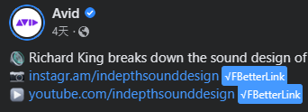
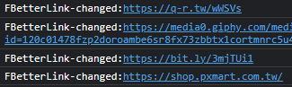

Author:sstteeeenn05
Say goodbye to Facebook Link Tracker
Facebook Link Tracker is a URL Qeury to let Facebook know what link do you click. It's like:

Disable Facebook Link Tracker, let user can directly go they want to go.
Just browsing Facebook normally.
The program will automatically change the links.
The link without Facebook tracking will be marked by a blue tag.
It may be like this:
If you see this, congratulations, the link's tracker was disabled successfully. You can enjoy clicking link without Facebook tracking.
You can alse check which link was changed in console:
https://gist.github.com/sstteeeenn05/af823d00f8fa7d64a857475761fa3f22